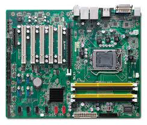
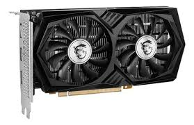
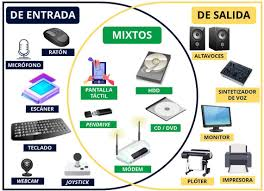

Definición:El Protocolo de Transferencia de Hipertexto (HTTP) es el protocolo fundamental y la columna vertebral de la World Wide Web. Su propósito principal es definir cómo se formatean y transmiten los mensajes, y qué acciones deben tomar los navegadores web (clientes) y los servidores web en respuesta a varios comandos.
Características:
Usa el protocolo HTTP o HTTPS para la comunicación, aunque existe una diferencia del certificado de seguridad entre ambos ya que cuenta con certificacion SSL.
Puede gestionar múltiples conexiones simultáneas.
Trabaja con métodos como GET, POST, PUT y DELETE.
Permite almacenar, redirigir y registrar solicitudes.
Puede integrarse con sistemas de seguridad SSL/TLS.
Ejemplos populares:
Apache HTTP Server (comúnmente llamado solo Apache) es un software de servidor web de código abierto y multiplataforma, desarrollado y mantenido por la Apache Software Foundation.
Nginx (pronunciado engine-x) es un software de código abierto de alto rendimiento. Se originó como un servidor web diseñado para una gran velocidad y eficiencia, pero hoy en día es una herramienta multifunción esencial en la infraestructura web moderna.
LiteSpeed Web Server (LSWS) es un software de servidor web propietario (de licencia de pago, a diferencia de Apache o Nginx) conocido por su alto rendimiento y eficiencia, siendo un reemplazo directo y optimizado para Apache.
Microsoft Internet Information Services (IIS) es un servidor web robusto y un conjunto de servicios de Internet desarrollado y propiedad de Microsoft.
Importancia: Son la base del funcionamiento de la web moderna, pues gestionan todas las comunicaciones entre usuarios y sitios web tambien radica en que son parte del pilar fundamental de la World Wide Web(W.W.W) y el principal medio para que los sitios web sean accesibles a internet gracias a una conexion
Definición:Los lenguajes de servidor, también conocidos como lenguajes de programación del lado del servidor o Backend, son lenguajes de programación que se ejecutan directamente en el servidor web antes de que el contenido sea enviado al navegador del usuario (cliente).
Su función principal es gestionar la lógica de negocio de una aplicación web, interactuando con bases de datos y procesando la información para generar dinámicamente el código HTML, CSS y JavaScript que finalmente verá el usuario.
Características:
Permiten la conexión con bases de datos.
Generan contenido HTML personalizado para cada usuario.
Manejan sesiones, cookies y autenticaciones.
Permiten realizar cálculos y validar formularios en el servidor.
Funcionan en conjunto con servidores HTTP como Apache o Nginx.
Ejemplos:
PHP: Ampliamente usado en sitios como WordPress o Wikipedia.
Node.js: Permite usar JavaScript del lado del servidor.
Python: Frameworks como Django y Flask lo hacen popular en desarrollo web.
Java: Usado en aplicaciones empresariales con frameworks como Spring.
Definición: Un Sistema Gestor de Bases de Datos (SGBD), conocido por sus siglas en inglés como DBMS (Database Management System), es un software especializado que actúa como interfaz entre la base de datos física (los datos almacenados) y los usuarios o las aplicaciones.
Su propósito principal es facilitar la creación, manipulación, administración y mantenimiento de una base de datos de manera organizada, segura y eficiente.
Características:
Usa el lenguaje SQL para realizar consultas.
Permite múltiples usuarios con distintos niveles de acceso.
Ofrece respaldo y recuperación ante fallos.
Garantiza la integridad y consistencia de los datos.
Puede ser relacional (SQL) o no relacional (NoSQL).
Ejemplos: MySQL, PostgreSQL, Oracle, Microsoft SQL Server, MongoDB.
Importancia: Sin un gestor de bases de datos, los servidores no podrían manejar grandes cantidades de información de forma segura ni eficiente.
Definición: Es una arquitectura donde el cliente es el demandante y el servidor es el proveedor de los recursos que el cliente requiera, por lo general el cliente solicita algo en especifico el cual el proveedor (servidor) tiene que poner a disposicion
Características:
Separación entre cliente (interfaz) y servidor (procesamiento).
Usa protocolos como HTTP, FTP, o TCP/IP para comunicarse.
Permite escalar el sistema con varios clientes y servidores.
El cliente puede ser un navegador, app móvil o programa.
El servidor suele esperar la peticion del cliente aunque en algunas ocasiones el servidor ya la tiene preparada sin necesidad de generar el alto trafico de peticiones
Ejemplo práctico: Cuando visitas un sitio web, tu navegador (cliente) envía una solicitud al servidor, el cual procesa y devuelve la página.
Definición:Es todo lo minimo que necesita un servidor dependiendo la necesidad que tengas en lo que se requiera(ranuras de disco duro, memorias RAM, fuentes de poder 0 hardware esto quiere decir que es todo lo externo que se puede tocar para mejorar el rendimiento)
Componentes esenciales:
Procesador (CPU): Mínimo 4 núcleos (recomendado Xeon o Ryzen).
Memoria RAM: Mínimo 8 GB (recomendado 16 GB o más).
Almacenamiento: SSD de al menos 500 GB para velocidad óptima.
Fuente de poder: De calidad con protección contra fallos eléctricos.
Conectividad: Internet estable con IP fija y buen ancho de banda.
Definicion modelo cliente servidor:Es la estructura fundamental de las redes e internet donde las tareas se distribuyen entre proveedores de recursos(servidores) y solicitantes de los mismos(clientes)
Descripcion graficada en tabla
ROL
DEFINICION
CLIENTE
Es el dispositivo o software que comienza un proceso de solicitud o servicio
SERVIDOR
Es el software o hardware que responde a esa solicitud y proporciona los datos o recursos solicitados
Muestra grafica:
CLIENTE (A)
⬇️
SOLICITUD (Petición de recurso HTTP)
SERVIDOR (B)
💾 PROCESAMIENTO: El CPU y la RAM procesan la solicitud y acceden a los datos
⬇️
RESPUESTA (Envío de datos o página solicitada)
CLIENTE (A)
COMPONENTES DEL HARDWARE EN UN SISTEMA OPERATIVO
CPU: El cerebro del computador, procesa datos e instrucciones.
RAM: Memoria temporal que ayuda al CPU a trabajar más rápido.
Disco duro / SSD: Almacena archivos, programas y el sistema operativo.
Placa base: Conecta todos los componentes y permite su comunicación.
Fuente de poder: Suministra energía a todos los componentes.
Tarjeta gráfica: Procesa imágenes y gráficos para mostrar en pantalla.
Periféricos: Dispositivos externos para interactuar con la computadora.
Almacenamiento extraíble: USB o discos externos para transportar o respaldar información.
representacion grafica:
PROCESADOR
El cerebro del computador, procesa datos e instrucciones.
RAM
Memoria temporal que ayuda al CPU a trabajar más rápido.
Disco duro / SSD
Almacena archivos, programas y el sistema operativo.
Placa base
Conecta todos los componentes y permite su comunicación.

Fuente de poder
Suministra energía a todos los componentes.
Tarjeta gráfica
Procesa imágenes y gráficos para mostrar en pantalla.

Periféricos
Dispositivos externos para interactuar con la computadora.

Almacenamiento extraíble
USB o discos externos para transportar o respaldar información.